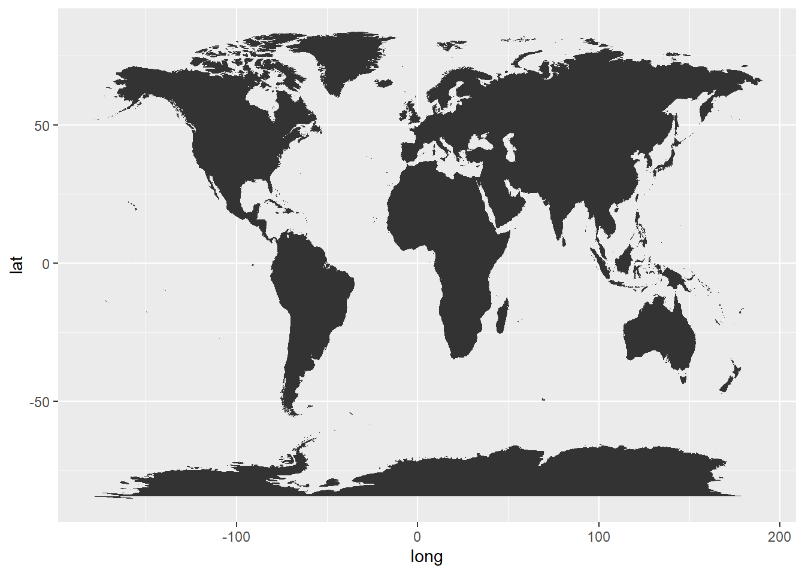
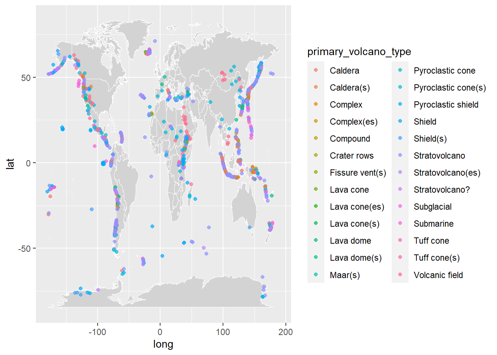
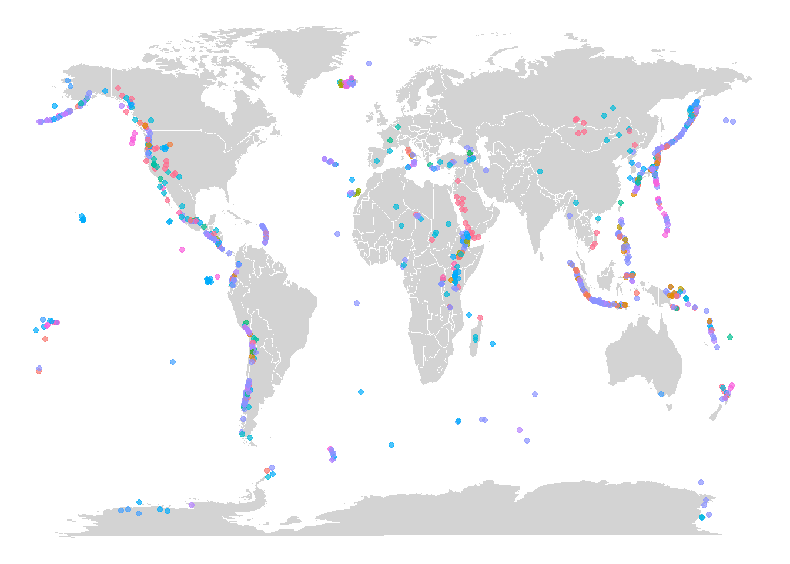
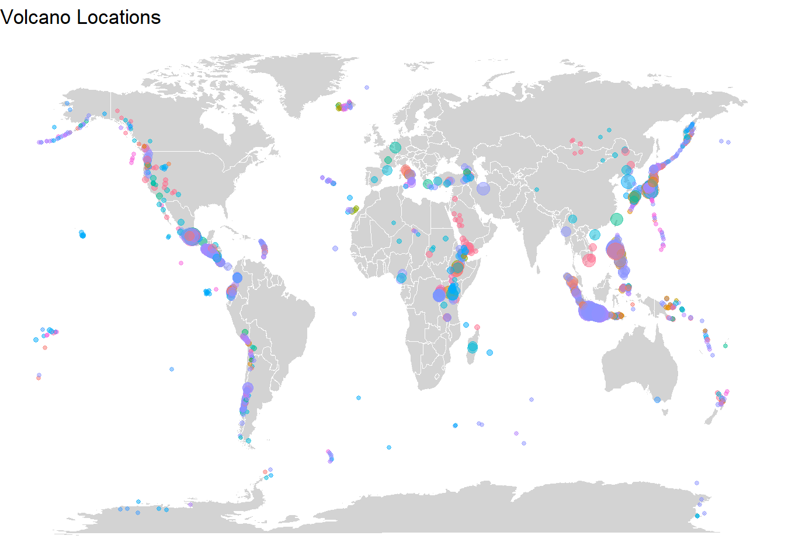

How To Make World Map with ggplot2 in R
chike
2022-08-03
source: https://datavizpyr.com/how-to-make-world-map-with-ggplot2-in-r/
How To Make World Map with ggplot2 in R? datavizpyr · May 15, 2020 ·
In this post, we will learn how to make world map using ggplot2 in R. We will use geom_map() function to make map with ggplot2. And then we will see an example of overlaying data on the world map.
To overlay, we will use volcano eruption data from TidyTuesday project to overlay the locations of volcano eruption on world map.
First, we will make a simple world map geom_map() function and then go on to customize the world map colors before adding data on top of the world map.
Table of Contents [hide]
1 Load Package and Datasets needed to make World Map 2 Simple World Map in R 3 Customizing Colors in World Map with R 4 Overlaying Data on World Map with R 5 Remove x and y-axis text and labels 6 Customize World Map by adding bubbles different sizes 7 Related
Load Package and Datasets needed to make World Map
Let us first load tidyverse package to make world map with R.
library(tidyverse)## ── Attaching packages ─────────────────────────────────────── tidyverse 1.3.1 ──## ✔ ggplot2 3.3.6 ✔ purrr 0.3.4
## ✔ tibble 3.1.7 ✔ dplyr 1.0.9
## ✔ tidyr 1.2.0 ✔ stringr 1.4.0
## ✔ readr 2.1.2 ✔ forcats 0.5.1## ── Conflicts ────────────────────────────────────────── tidyverse_conflicts() ──
## ✖ dplyr::filter() masks stats::filter()
## ✖ dplyr::lag() masks stats::lag()We will load the volcano eruption data from TidyTuesday github page.
volcano <- readr::read_csv("https://raw.githubusercontent.com/rfordatascience/tidytuesday/master/data/2020/2020-05-12/volcano.csv")## Rows: 958 Columns: 26
## ── Column specification ────────────────────────────────────────────────────────
## Delimiter: ","
## chr (18): volcano_name, primary_volcano_type, last_eruption_year, country, r...
## dbl (8): volcano_number, latitude, longitude, elevation, population_within_...
##
## ℹ Use `spec()` to retrieve the full column specification for this data.
## ℹ Specify the column types or set `show_col_types = FALSE` to quiet this message.To make world map with the volcano data we only need a few variables from the volcano data, including location information and volcano type.
volcano %>%
select(primary_volcano_type, longitude,
latitude, population_within_100_km) %>%
head()## # A tibble: 6 × 4
## primary_volcano_type longitude latitude population_within_100_km
## <chr> <dbl> <dbl> <dbl>
## 1 Shield(s) 132. 34.5 4071152
## 2 Stratovolcano -67.6 -23.3 9092
## 3 Stratovolcano(es) -90.9 14.5 7634778
## 4 Caldera 34.6 38.5 2253483
## 5 Stratovolcano -121. 46.2 393303
## 6 Stratovolcano(es) 140. 37.6 5024654We can get the world map coordinates using map_data() function available as a part of tidyverse suit of packages.
world <- map_data("world")
world %>% head()## long lat group order region subregion
## 1 -69.89912 12.45200 1 1 Aruba <NA>
## 2 -69.89571 12.42300 1 2 Aruba <NA>
## 3 -69.94219 12.43853 1 3 Aruba <NA>
## 4 -70.00415 12.50049 1 4 Aruba <NA>
## 5 -70.06612 12.54697 1 5 Aruba <NA>
## 6 -70.05088 12.59707 1 6 Aruba <NA>Simple World Map in R
Now we have all the data to make world map. Let us start with a simple world map using geom_map() function with the world map longitude and lattitude information.
We use ggplot() function and add geom_map() layer with world data and aesthetics specifying longitude and latitude.
ggplot() +
geom_map(
data = world, map = world,
aes(long, lat, map_id = region)
) ## Warning: Ignoring unknown aesthetics: x, y We get a nice world map, with black color filling the land area of the world by default.
Customizing Colors in World Map with R
We can customize the world map by changing the world map color and adding country lines visible. To change color we use color and fill argument inside aes() function. We also specify the thickness of country lines using size argument.
ggplot() +
geom_map(
data = world, map = world,
aes(long, lat, map_id = region),
color = "black", fill = "lightgray", size = 0.1
) ## Warning: Ignoring unknown aesthetics: x, y
Now, we have customized the world map color and added country lines. # Overlaying Data on World Map with R Now that we know how to make a simple world map, let us overlay data points on the world map to make the map more useful.
In this example, we overlay different types of volcano from the volcano data on the world map. To overlay data on the map, we use geom_point() function and provide volcano data inside with its separate aes() function. Our x and y-axis are longitude and latitude of volcano locations and we color it by volcano type.
ggplot() +
geom_map(
data = world, map = world,
aes(long, lat, map_id = region),
color = "white", fill = "lightgray", size = 0.1
) +
geom_point(
data = volcano,
aes(longitude, latitude, color = primary_volcano_type),
alpha = 0.7
) ## Warning: Ignoring unknown aesthetics: x, y Now we have overlayed volcano locations on the world map with different color for different types of volcano. Since there are many types of volcano, we have removed the legends on the plot.
Remove x and y-axis text and labels
Let us customize the world map with volcano locations. In the above example, we have x and y-axis text and labels. We can easily remove that by using ggplot theme with no axis, i.e. theme_void().
ggplot() +
geom_map(
data = world, map = world,
aes(long, lat, map_id = region),
color = "white", fill = "lightgray", size = 0.1
) +
geom_point(
data = volcano,
aes(longitude, latitude, color = primary_volcano_type),
alpha = 0.7
) +
theme_void() +
theme(legend.position = "none")## Warning: Ignoring unknown aesthetics: x, y
Customize World Map by adding bubbles different sizes
Let us customize the world map with volcano locations further, by adding size variable based on the number of people affected by volcano. We can add size argument with “population_within_100_km” to make bubbles on the world map. We have also added title using labs() function in ggplot2.
ggplot() +
geom_map(
data = world, map = world,
aes(long, lat, map_id = region),
color = "white", fill = "lightgray", size = 0.1
) +
geom_point(
data = volcano,
aes(longitude, latitude,
color = primary_volcano_type,
size=population_within_100_km),
alpha = 0.5
) +
#labs(x = NULL, y = NULL, color = NULL)+
theme_void() +
theme(legend.position = "none")+
labs(title="Volcano Locations")## Warning: Ignoring unknown aesthetics: x, y